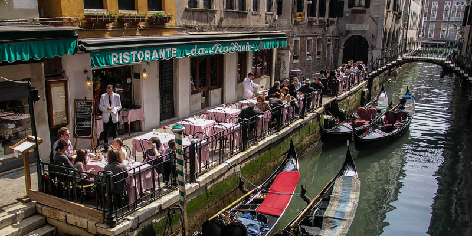

People
In Venice local people are friendly and open, especially the youngest. Almost every day Italian people practice gastronomy, they love to cook every day, drink coffee with friends or business partners when they have free time. During the year Venice is very crowded most of the time, old local people don't like too many tourists in the city because of the noise and photographing their houses. In restaurants waiters are always kind and they want for his costumer to have a good experience. When tourist is traveling to Venice, he is warned for some places which are near the main square to not visit because waiters include in price sitting and setting the table. It is a huge tourist trap.
